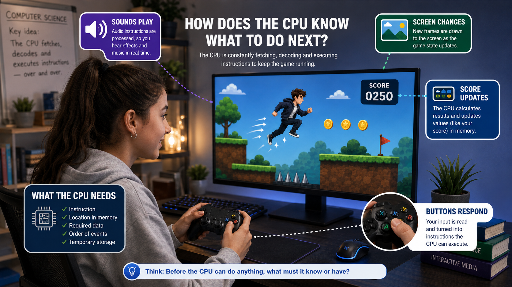
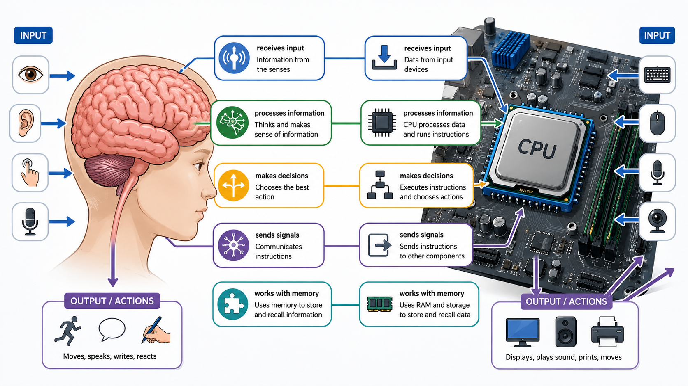

Describe the purpose of the Central Processing Unit.
Learning objectives
By the end of this lesson, you should be able to:
Identify the ALU, Control Unit, cache and registers.
Explain what the MAR, MDR, Program Counter and Accumulator store.
Model the stages of the fetch-execute cycle.
Distinguish between data and an address.
Part 1 - The purpose of the CPU
Part 1 - Purpose of the CPU
How does the Computer know what to do next?
You open a 2D platform game. The screen changes, sounds play, buttons respond and the score updates. You reach the final level and the final boss appears on screen.
The boss suddenly moves towards your character, launches an attack and reacts when you press the buttons.

Part 1 - Purpose of the CPU
The CPU is the computer's main processor
The Central Processing Unit (CPU) is the main processor inside a computer. Its job is to process instructions and control the main operations of the computer. Like a brain, the CPU receives information, works out what to do, and sends signals so actions happen.

Part 1 - Purpose of the CPU
CPU instructions create output
The CPU repeats the cycle of getting one instruction from RAM, processing it, and sending the resulting signal to an output device.
Part 1 - Purpose of the CPU
The CPU processes instructions and data
A program is made from instructions and data. The instructions and data are stored in RAM. The Central Processing Unit fetches the instructions and data from RAM and executes it.
Multiple choice question
Use this diagnostic question before moving into CPU components.
Q1
What is the main purpose of the CPU?
1 markPart 2 - CPU components and the FDE cycle
Part 2 - CPU Components & FDE Cycle
Core CPU components
The Control Unit (CU)
The Control Unit (CU) is responsible for controlling the flow of data and instructions in the CPU and telling other parts of the computer what to do.
- It decodes instructions.
- It executes instructions.
- It manages control signals in the CPU.
Arithmetic Logic Unit (ALU)
The Arithmetic Logic Unit (ALU) handles all the calculations and logical decisions, such as addition, subtraction, or comparing numbers.
- It does arithmetic (add, subtract).
- It does logic (AND, OR, NOT) operations.
- It does comparison (>, <, =, !=) operations.
Core components are the main internal parts of the CPU that carry out processing: the Control Unit coordinates what happens next, while the ALU performs the calculations, logic and comparisons needed to execute instructions.
Part 2 - CPU Components & FDE Cycle
Special purpose registers
PC
The Program Counter (PC) stores the address of the next instruction waiting to be processed.
It increments by 1.
MAR
The Memory Address Register (MAR) stores the address of the instruction or data currently being processed.
It copies the address from the PC.
MDR
The Memory Data Register (MDR) stores the actual instruction or data currently being processed.
CIR
The Current Instruction Register (CIR) stores the actual instruction currently being decoded and executed.
It copies the instruction from the MDR.
ACC
The Accumulator (ACC) stores the results from arithmetic calculations.
A CPU register is a very small, very fast storage location inside the CPU. Registers hold the immediate addresses, instructions, data or results the CPU needs while it is processing.
Part 2 - CPU Components & FDE Cycle
Click each stage of the FDE cycle
Hover over or click a numbered stage to see what happens.
The CPU gets the next instruction from memory. The Program Counter holds the address of that next instruction, and the instruction is copied into the CPU so it can be worked on.
Part 2 - CPU Components & FDE Cycle
FDE cycle in action
The Program Counter stores address 1, so the CPU knows which RAM address to fetch from next.
Part 2 - CPU Components & FDE Cycle
Match CPU components to roles
| Term | Description |
|---|---|
| Performs calculations and logical comparisons. | |
| Coordinates CPU operations and controls the flow of instructions and data. | |
| Stores the address of the next instruction. | |
| Stores the address of a memory location. | |
| Stores data being transferred to or from memory. | |
| Stores the current instruction while it is decoded and executed. | |
| Stores the result of a calculation. |
You have 0 of 7 correct.
Exam questions
Exam questions
Multiple choice question
Q8
Which pair both store addresses?
1 markMultiple choice question
Q9
Which CPU component carries out arithmetic and logic operations?
1 markPart 2 - CPU Components & FDE Cycle
Move each stage into the correct position
- First:Execute
- Second:Fetch
- Third:Repeat
- Fourth:Decode
You have 0 of 4 correct.
Part 3 - The Stored program concept and Von Neumann architecture
Part 3 - The Stored program concept & Von Neumann
Early computers used separate memories
Early computers often kept instructions and data in different memory areas. The instructions told the machine what job to do, and the data was the information it worked on. This suited machines built for one special job, but it made computers harder to change. To run a different program, engineers often had to change the instruction setup instead of just loading new instructions into memory.
Part 3 - The Stored program concept & Von Neumann
Stored Program Concept
John von Neumann helped explain the stored program concept in 1945. This means program instructions are stored in memory along with the data. Before this, many computers had to be physically rewired or reset to do a different job. This was an improvement because a computer could run a new program by loading new instructions into memory.

Part 3 - The Stored program concept & Von Neumann
Von Neumann architecture
Von Neumann architecture uses the stored program concept. It has one main memory that stores both instructions and data. The CPU fetches what it needs from that memory, so the same computer can run lots of different programs. This design is still common because it is flexible, simpler for general purpose computers, and makes software easy to load and change.
Part 3 - The Stored program concept & Von Neumann
Before Vs Now
Before, many computers kept instructions and data in different memory areas. Now, Von Neumann architecture uses one shared main memory for both, so the computer can load different programs without changing the hardware.
Exam questions
Misconception check
Correct the common mistakes
Misconception
The MAR stores the instruction.
Correction
The MAR stores an address. The MDR stores the data or instruction.
Misconception
The CIR stores the next address.
Correction
The PC stores the next address. The CIR stores the current instruction.
Misconception
The ALU controls the CPU.
Correction
The ALU calculates and compares. The Control Unit sends control signals.
Misconception
Von Neumann architecture uses separate memories.
Correction
Von Neumann architecture uses one shared memory. This is the stored program concept.
Exam questions
Ready for the next step?
Use the follow-up resources to practise the topic, check exam-style understanding and test recall.